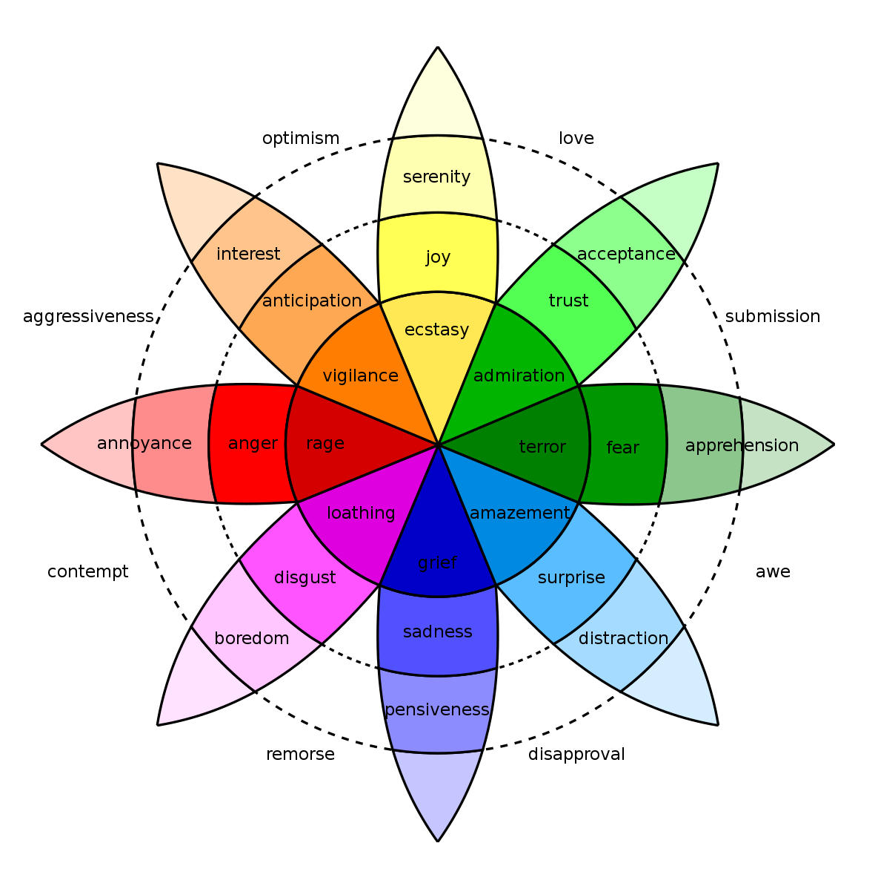

What is Emotional Intelligence?
Emotional intelligence is the intelligence that is based around social interaction. We, the humans, are social creatures and so much of our lives, happiness and success in this world can be traced back to how we interact with one's own emotions, and consequently our actions which become our interactions.
The following quote from Viktor Frankl’s - Man's Search For Meaning embodies one of the core principles of mindfulness, and EQ:
“Between stimulus and response there is a space. In that space is our power to choose our response. In our response lies our growth and our freedom.”
The ability to stop, assess the situation and any other people involved and then decide on the action you want to take is a key part of where EQ surfaces. However for it to surface, requires a foundation upon which you ( and me ) can release our own baggage. This baggage can be a wide range of things that affect how we operate, a lot of it can generally be stemmed back to childhood. One way I’ve heard it referred to is that we are made up of mental parts, things in our DNA that provide survival mechanisms. Those parts can sometimes be hijacked by trauma, and environmental factors that then turn into negative thought patterns.
With a first step of being self aware ( meditation and mindfulness practice is helpful for this ), you can start to recognise these harmful thought patterns. Personally I’ve found journalling to be the most powerful tool for tracing these back to where the scarring originally occurred, and most of the time, being able to as an adult look back upon the situation and see it from a birds I view, and in parallel be loving to the child Seb, I’ve been able to let go of the things that were eating me up, and in more occasions than I’m proud of cause me to hurt the people around me who I loved the most.
Obviously a good therapist is going to be helpful in untangling the parts of you that are causing baggage, but the reality in NZ is that it’s generally out of the budget of most people. So the next best steps that i’ve found helpful and would recommend to anyone reading this who would like to develop their EQ would be the following:
Read, read, and read some more.
The top books on the topic that i’ve read so far are the following:
How to win friends and influence people - Dale Carnegie. Once you excuse the salesie title, written for an audience 50 years ago, this is a great book for starting off in a journey of developing EQ. Another one is called The Social Leap - William von Hippel, and also thinking fast and slow - Daniel Kahneman. A great book on trust and its place in society. I’ve also found Biographies helpful. It gives you an insight into other families dynamics a lot of the time, and how life events and perceptions of those events shaped them. As for deep dives into books directly on the topic of EQ, I am only just getting into some of them. The two books I’m about to get into are Love yourself like your life depends on it - Kamal Ravikant, and the gold standard in EQ books, Emotional Intelligence - Daniel Goleman. So You’ll have to wait until the next blog on EQ to hear how they fit into my version of this puzzle we call life.
The following Image is one that create a map for understanding emotions and unpacking them:
I found this blog to be a good read on the topic ( Along with nearly all of Tim’s work )
Also as for another resource, Stoicism is a great place to look to build processes and ways of thinking that allow for higher EQ. There's definitely enough to chew on with that topic for its own post though!
How is it different to IQ?
IQ is a measure for someone's reasoning ability. It is basically the ability someone has to use information and logic to answer questions or make predictions. Often it is understood to be a fixed measure. However I’d like to argue that recent neuroplasticity research would probably disagree. EQ is what we use to describe emotional intelligence. It is almost always thought of as a learned skill.
Why is it important?
For starters, employers tend to prefer it over EQ. But I think the most important reason for working on developing EQ is relationships. Building great friendships with the people in your life is a huge part of having a happy and meaningful time here on earth.